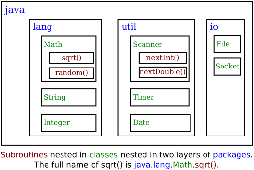

Section 4.6
APIs, Packages, Modules, and Javadoc
As computers and their user interfaces have become easier to use, they have also become more complex for programmers to deal with. You can write programs for a simple console-style user interface using just a few subroutines that write output to the console and read the user's typed replies. A modern graphical user interface, with windows, buttons, scroll bars, menus, text-input boxes, and so on, might make things easier for the user, but it forces the programmer to cope with a hugely expanded array of possibilities. The programmer sees this increased complexity in the form of great numbers of subroutines that are provided for managing the user interface, as well as for other purposes.
4.6.1 Toolboxes
Someone who wanted to program for the original Macintosh computers—and to produce programs that look and behave the way users expected them to—had to deal with the "Macintosh Toolbox," a collection of well over a thousand different subroutines. There were routines for opening and closing windows, for drawing geometric figures and text to windows, for adding buttons to windows, and for responding to mouse clicks on the window. There were other routines for creating menus and for reacting to user selections from menus. Aside from the user interface, there were routines for opening files and reading data from them, for communicating over a network, for sending output to a printer, for handling communication between programs, and in general for doing all the standard things that a computer has to do. Microsoft Windows provides its own set of subroutines for programmers to use, and they are quite a bit different from the subroutines used on the Mac. Linux has several different GUI toolboxes for the programmer to choose from.
The analogy of a "toolbox" is a good one to keep in mind. Every programming project involves a mixture of innovation and reuse of existing tools. A programmer is given a set of tools to work with, starting with the set of basic tools that are built into the language: things like variables, assignment statements, if statements, and loops. To these, the programmer can add existing toolboxes full of routines that have already been written for performing certain tasks. These tools, if they are well-designed, can be used as true black boxes: They can be called to perform their assigned tasks without worrying about the particular steps they go through to accomplish those tasks. The innovative part of programming is to take all these tools and apply them to some particular project or problem (word-processing, keeping track of bank accounts, processing image data from a space probe, Web browsing, computer games, ...). This is called applications programming.
A software toolbox is a kind of black box, and it presents a certain interface to the programmer. This interface is a specification of what routines are in the toolbox, what parameters they use, and what tasks they perform. This information constitutes the API, or Application Programming Interface, associated with the toolbox. The Macintosh API is a specification of all the routines available in the Macintosh Toolbox. A company that makes some hardware device—say a card for connecting a computer to a network—might publish an API for that device consisting of a list of routines that programmers can call in order to communicate with and control the device. Scientists who write a set of routines for doing some kind of complex computation—such as solving "differential equations," say—would provide an API to allow others to use those routines without understanding the details of the computations they perform.
The Java programming language is supplemented by a large, standard API. You've seen part of this API already, in the form of mathematical subroutines such as Math.sqrt(), the String data type and its associated routines, and the System.out.print() routines. The standard Java API includes routines for working with graphical user interfaces, for network communication, for reading and writing files, and more. It's tempting to think of these routines as being part of the Java language, but they are technically subroutines that have been written and made available for use in Java programs.
Java is platform-independent. That is, the same program can run on platforms as diverse as Mac OS, Windows, Linux, and others. The same Java API must work on all these platforms. But notice that it is the interface that is platform-independent; the implementation of some parts of the API varies from one platform to another. A Java system on a particular computer includes implementations of all the standard API routines. A Java program includes only calls to those routines. When the Java interpreter executes a program and encounters a call to one of the standard routines, it will pull up and execute the implementation of that routine which is appropriate for the particular platform on which it is running. This is a very powerful idea. It means that you only need to learn one API to program for a wide variety of platforms.
4.6.2 Java's Standard Packages
Like all subroutines in Java, the routines in the standard API are grouped into classes. To provide larger-scale organization, classes in Java can be grouped into packages, which were introduced briefly in Subsection 2.6.7. You can have even higher levels of grouping, since packages can also contain other packages. In fact, the entire standard Java API is implemented in several packages. One of these, which is named "java", contains several non-GUI packages as well as the original AWT graphical user interface classes. Another package, "javax", contains the classes used by the Swing graphical user interface as well as many other classes. And "javafx" contains the JavaFX API that is used for GUI programming in this textbook.
A package can contain both classes and other packages. A package that is contained in another package is sometimes called a "sub-package." Both the java package and the javafx package contain sub-packages. One of the sub-packages of java, for example, is named "util". Since util is contained within java, its full name is actually java.util. This package contains a variety of utility classes, including the Scanner class that was discussed in Subsection 2.4.6. The java package includes several other sub-packages, such as java.io, which provides facilities for input/output, and java.net, which deals with network communication. The most basic package is called java.lang. This package contains fundamental classes such as String, Math, Integer, and Double.
It might be helpful to look at a graphical representation of the levels of nesting in the java package, its sub-packages, the classes in those sub-packages, and the subroutines in those classes. This is not a complete picture, since it shows only a very few of the many items in each element:

Similarly, the package javafx contains a package javafx.scene, which in turn contains javafx.scene.control. This package contains classes that represent GUI components such as buttons and input boxes. Another subpackage, javafx.scene.paint, contains class Color and other classes that define ways to fill and stroke a shape.
The standard Java API includes thousands of classes in hundreds of packages. Many of the classes are rather obscure or very specialized, but you might want to browse through the documentation to see what is available. As I write this, the documentation for the complete basic API for Java 8 can be found at
https://docs.oracle.com/javase/8/docs/api/
and for JavaFX at
https://docs.oracle.com/javase/8/javafx/api/toc.htm
See the subsection about "modules," below, for a discussion of changes that were made the language in Java 9 and for links to the documentation for Java 11. However, for the purposes of this textbook, you will probably find that the Java 8 documentation is easier to use.
Even an expert programmer won't be familiar with the entire Java API, or even a majority of it. In this book, you'll only encounter several dozen classes, and those will be sufficient for writing a wide variety of programs.
4.6.3 Using Classes from Packages
Let's say that you want to use the class javafx.scene.paint.Color in a program that you are writing. This is the full name of class Color in package javafx.scene.paint. Like any class, javafx.scene.paint.Color is a type, which means that you can use it to declare variables and parameters and to specify the return type of a function. One way to do this is to use the full name of the class as the name of the type. For example, suppose that you want to declare a variable named rectColor of type Color. You could say:
javafx.scene.paint.Color rectColor;
This is just an ordinary variable declaration of the form "type-name variable-name;". Of course, using the full name of every class can get tiresome, and you will hardly ever see full names like this used in a program. Java makes it possible to avoid using the full name of a class by importing the class. If you put
import javafx.scene.paint.Color;
at the beginning of a Java source code file, then, in the rest of the file, you can abbreviate the full name javafx.scene.paint.Color to just the simple name of the class, which is Color. Note that the import line comes at the start of a file (after the package statement, if there is one) and is not inside any class. Although it is sometimes referred to as a statement, it is more properly called an import directive since it is not a statement in the usual sense. The import directive "import javafx.scene.paint.Color" would allow you to say
Color rectColor;
to declare the variable. Note that the only effect of the import directive is to allow you to use simple class names instead of full "package.class" names. You aren't really importing anything substantial; if you leave out the import directive, you can still access the class—you just have to use its full name. There is a shortcut for importing all the classes from a given package. For example, you can import all the classes from java.util by saying
import java.util.*;
The "*" is a wildcard that matches every class in the package. (However, it does not match sub-packages; for example, you cannot import the entire contents of all the sub-packages of the javafx package by saying import javafx.*.)
Some programmers think that using a wildcard in an import statement is bad style, since it can make a large number of class names available that you are not going to use and might not even know about. They think it is better to explicitly import each individual class that you want to use. In my own programming, I often use wildcards to import all the classes from the most relevant packages, and use individual imports when I am using just one or two classes from a given package.
A program that works with networking might include the line "import java.net.*;", while one that reads or writes files might use "import java.io.*;". But when you start importing lots of packages in this way, you have to be careful about one thing: It's possible for two classes that are in different packages to have the same name. For example, both the java.awt package and the java.util package contain a class named List. If you import both java.awt.* and java.util.*, the simple name List will be ambiguous. If you try to declare a variable of type List, you will get a compiler error message about an ambiguous class name. You can still use both classes in your program: Use the full name of the class, either java.awt.List or java.util.List. Another solution, of course, is to use import to import the individual classes you need, instead of importing entire packages.
Because the package java.lang is so fundamental, all the classes in java.lang are automatically imported into every program. It's as if every program began with the statement "import java.lang.*;". This is why we have been able to use the class name String instead of java.lang.String, and Math.sqrt() instead of java.lang.Math.sqrt(). It would still, however, be perfectly legal to use the longer forms of the names.
Programmers can create new packages. Suppose that you want some classes that you are writing to be in a package named utilities. Then the source code files that defines those classes must begin with the line
package utilities;
This would come even before any import directive in that file. Furthermore, the source code file would be placed in a folder with the same name as the package, "utilities" in this example. And a class that is in a subpackage must be in a subfolder. For example, a class in a package named utilities.net would be in folder named "net" inside a folder named "utilities". A class that is in a package automatically has access to other classes in the same package; that is, a class doesn't have to import classes from the package in which it is defined.
In projects that define large numbers of classes, it makes sense to organize those classes into packages. It also makes sense for programmers to create new packages as toolboxes that provide functionality and APIs for dealing with areas not covered in the standard Java API. (And in fact such "toolmaking" programmers often have more prestige than the applications programmers who use their tools.)
However, with just a couple of exceptions such as class TextIO in package textio, the classes written for this book are not in packages. For the purposes of this book, you need to know about packages mainly so that you will be able to import TextIO and classes from the standard packages. The standard packages are always available to the programs that you write. You might wonder where the standard classes are actually located. Again, that can depend to some extent on the version of Java that you are using. In Java 8 they are stored in jar files in a subdirectory named lib inside the Java Runtime Environment installation directory. A .jar (or "Java archive") file is a single file that can contain many classes. Most of the classes used with Java 8 can be found in a jar file named rt.jar. Things changed substantially in Java 9, as discussed in the next subsection.
Although we won't be creating packages explicitly, every class is actually part of a package. If a class is not specifically placed in a package, then it is put in something called the default package, which has no name. Almost all the examples that you see in this book are in the default package.
4.6.4 About Modules
Starting with Java 9, a major change was made to the large-scale structure of Java with the introduction of modules. A module is a collection of packages, so it represents yet another level of containment: Modules contain packages which contain classes which contain variables and methods. A package does not have to be in a module to be used, but all of the standard classes in Java and in JavaFX have been divided into a set of modules.
Modules were introduced for several reasons. A major reason is to provide better access control. Before modules, a class that is declared public can be used anywhere, from any class in any package, as can its public variables and methods. For a class that is defined in a module, on the other hand, "public" only automatically means public within the module where it is defined. However, a module can explicitly export a package. Exporting a package from a module makes the public classes in the package accessible from anywhere, including from other modules and from classes that are not part of any module. (It is even possible to export a package just to certain specified modules, providing an even finer level of access control.) The upshot is that it is now possible to have entire packages that are essentially private: They provide services to other packages in the same module, but are invisible from outside that module. So a module is another kind of black box, and a non-exported package is part of its hidden implementation. Of course, modularity on this scale is really only important for very large-scale applications.
Another motivation for modules is the sheer size of the standard JRE (Java Runtime Environment), which includes all of the standard classes. A given application will use only a small part of the standard runtime. Modularization makes it possible to construct smaller, custom JREs that contain only the modules that are required by an application. The JDK includes a jlink command for making custom runtimes, which can include modules that define an application as well as the standard modules that are required to run that application. That runtime can then be distributed as a standalone application that can be executed even by people who have not installed a JDK on their computer. But just as for the JDK itself, different versions of the custom runtime will be needed for Windows, for Mac OS, and for Linux. Furthermore, when security updates are made to the JDK, they are not automatically applied to custom runtimes, so the application developer takes on the responsibility of updating custom runtimes. Once again, this is really only useful for fairly large applications.
In a JDK for Java 9 or later, compiled class files from the standard modules are stored together in a file named modules inside a directory named lib in the main JDK directory. This is a so-called "jimage file," and there is a command-line tool named jimage for working with such files. If you use the jlink tool to create a custom runtime, part of what it does is to create a custom modules file containing just the modules that are needed by the runtime. In the JDK 12 on my Linux computer, modules is a 130 megabyte file containing 30199 classes in 1000 packages in 70 modules. The JDK directory also has a subdirectory named jmods that contains the modules in another form. However, it is not required for compiling and running programs and, as far as I can tell, is meant mostly for use by jlink.
Modules in the JDK include, for example, java.base (which contains the basic modules such as java.lang and java.util) and java.desktop (which include packages for the Swing GUI toolkit). JavaFX packages include javafx.base, javafx.control, javafx.graphics, and a few that are less generally useful. The API documentation for modular versions of Java is divided into modules, then into packages, and finally into classes. This makes the documentation harder to browse than in older versions of Java. However, the documentation web site does have an effective search feature. As I write this, the documentation for Java 11 and for JavaFX 11 is available at:
https://docs.oracle.com/en/java/javase/11/docs/api/index.html
https://openjfx.io/javadoc/11/
A class can be defined outside of any module, and it is possible for that class to use packages from modules, provided that those packages are exported by the modules where they are defined. In particular, a programmer can use classes from the JDK without ever thinking about modules or knowing that they exist. This applies to all the command-line programs in this book. However, when using Java 11 or later, things are different for GUI programs that use JavaFX, which has been removed from the JDK and is distributed as a separate set of modules. As we saw in Section 2.6, when you compile or run a JavaFX program, you need to specify a module path that includes the JavaFX modules, and you need to provide an --add-modules option. (In Section 2.6, the value for --add-modules was given as ALL-MODULE-PATH, which lets the program access any modules that are found on the module path. An alternative is to specify a list of names of just those modules that are actually used by the program.)
Aside from using modules with JavaFX and the basic background information in this section, this textbook does not cover modules.
4.6.5 Javadoc
To use an API effectively, you need good documentation for it. The documentation for most Java APIs is prepared using a system called Javadoc. For example, this system is used to prepare the documentation for Java's standard packages. And almost everyone who creates a toolbox in Java publishes Javadoc documentation for it.
Javadoc documentation is prepared from special comments that are placed in the Java source code file. Recall that one type of Java comment begins with /* and ends with */. A Javadoc comment takes the same form, but it begins with /** rather than simply /*. You have already seen comments of this form in many of the examples in this book.
Note that a Javadoc comment must be placed just before the subroutine that it is commenting on. This rule is always followed. You can have Javadoc comments for subroutines, for member variables, and for classes. The Javadoc comment always immediately precedes the thing it is commenting on.
Like any comment, a Javadoc comment is ignored by the computer when the file is compiled. But there is a tool called javadoc that reads Java source code files, extracts any Javadoc comments that it finds, and creates a set of Web pages containing the comments in a nicely formatted, interlinked form. By default, javadoc will only collect information about public classes, subroutines, and member variables, but it allows the option of creating documentation for non-public things as well. If javadoc doesn't find any Javadoc comment for something, it will construct one, but the comment will contain only basic information such as the name and type of a member variable or the name, return type, and parameter list of a subroutine. This is syntactic information. To add information about semantics and pragmatics, you have to write a Javadoc comment.
As an example, you can look at the documentation Web page for TextIO by following this link: TextIO Javadoc documentation. The documentation page was created by applying the javadoc tool to the source code file, TextIO.java. If you have downloaded the on-line version of this book, the documentation can be found in the TextIO_Javadoc directory.
In a Javadoc comment, the *'s at the start of each line are optional. The javadoc tool will remove them. In addition to normal text, the comment can contain certain special codes. For one thing, the comment can contain HTML mark-up commands. HTML is the language that is used to create web pages, and Javadoc comments are meant to be shown on web pages. The javadoc tool will copy any HTML commands in the comments to the web pages that it creates. The book will not teach you HTML, but as an example, you can add <p> to indicate the start of a new paragraph. (Generally, in the absence of HTML commands, blank lines and extra spaces in the comment are ignored. Furthermore, the characters & and < have special meaning in HTML and should not be used in Javadoc comments except with those meanings; they can be written as & and <.)
In addition to HTML commands, Javadoc comments can include doc tags, which are processed as commands by the javadoc tool. A doc tag has a name that begins with the character @. I will only discuss four tags: @author, @param, @return, and @throws. The @author tag can be used only for a class, and should be followed by the name of the author. The other three tags are used in Javadoc comments for a subroutine to provide information about its parameters, its return value, and the exceptions that it might throw. These tags must be placed at the end of the comment, after any description of the subroutine itself. The syntax for using them is:
@param parameter-name description-of-parameter @return description-of-return-value @throws exception-class-name description-of-exception
The descriptions can extend over several lines. The description ends at the next doc tag or at the end of the comment. You can include a @param tag for every parameter of the subroutine and a @throws for as many types of exception as you want to document. You should have a @return tag only for a non-void subroutine. These tags do not have to be given in any particular order.
Here is an example that doesn't do anything exciting but that does use all three types of doc tag:
/**
* This subroutine computes the area of a rectangle, given its width
* and its height. The length and the width should be positive numbers.
* @param width the length of one side of the rectangle
* @param height the length the second side of the rectangle
* @return the area of the rectangle
* @throws IllegalArgumentException if either the width or the height
* is a negative number.
*/
public static double areaOfRectangle( double length, double width ) {
if ( width < 0 || height < 0 )
throw new IllegalArgumentException("Sides must have positive length.");
double area;
area = width * height;
return area;
}
I use Javadoc comments for many of my examples. I encourage you to use them in your own code, even if you don't plan to generate Web page documentation of your work, since it's a standard format that other Java programmers will be familiar with.
If you do want to create Web-page documentation, you need to run the javadoc tool. This tool is available as a command in the Java Development Kit that was discussed in Section 2.6. You can use the javadoc tool in a command line interface similarly to the way that the javac and java commands are used. Javadoc can also be applied in the integrated development environments that were also discussed in Section 2.6. I won't go into any of the details here; consult the documentation for your programming environment.
4.6.6 Static Import
Before ending this section, I will mention an extension of the import directive. We have seen that import makes it possible to refer to a class such as java.util.Scanner using its simple name, Scanner. But you still have to use compound names to refer to static member variables such as System.out and to static methods such as Math.sqrt.
There is another form of the import directive that can be used to import static members of a class in the same way that the ordinary import directive imports classes from a package. That form of the directive is called a static import, and it has syntax
import static package-name.class-name.static-member-name;
to import one static member name from a class, or
import static package-name.class-name.*;
to import all the public static members from a class. For example, if you preface a class definition with
import static java.lang.System.out;
then you can use the simple name out instead of the compound name System.out. This means you can say out.println instead of System.out.println. If you are going to work extensively with the Math class, you might preface your class definition with
import static java.lang.Math.*;
This would allow you to say sqrt instead of Math.sqrt, log instead of Math.log, PI instead of Math.PI, and so on. And you could import the getlnInt function from TextIO using
import static textio.TextIO.getlnInt;
Note that the static import directive requires a package-name, even for classes in the standard package java.lang. One consequence of this is that you can't do a static import from a class in the default package.